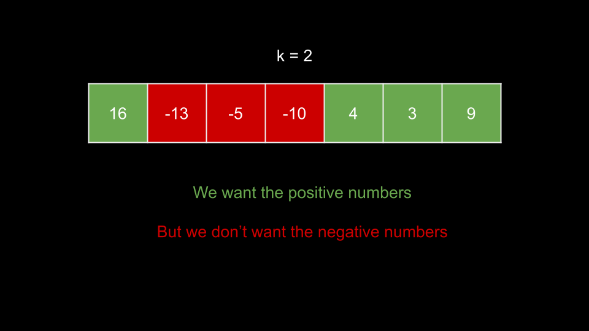
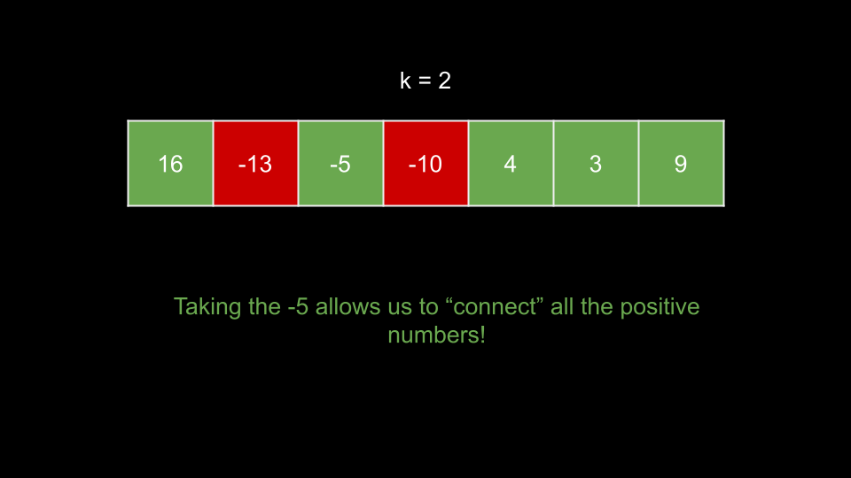

Intuition
Before we start developing a strategy, we must carefully understand what the problem is asking for.
We need to maximize the sum of a subsequence. We can take as many integers as we want, but the primary constraint is
that we cannot have a gap of k or more in our subsequence.
You may immediately notice that in an array of positive integers, we should always take the entire array. The tricky part comes in when we have negative integers. Of course, we would prefer to avoid negative integers since they will decrease our sum. However, it may be worth taking a negative integer as a sort of "bridge". Take a look at the following example:

In this example, we have a group of negative numbers separating a 16 and a group of positive numbers
that sum to 16. We would like to take all the positive numbers while avoiding the negative numbers, but
we aren't allowed to as that would result in a gap of three numbers. As k = 2, the biggest gap we can
have is one number. The optimal solution here is to take the -5.

As you can see, the -5 acts as a bridge for the positive numbers. The question now is, how do we know
when it is worth it to take negative numbers? In this case, taking the -5 allowed us to take the first
element of 16. This results in a net gain of 11. Anytime we have a positive net gain, we
should consider taking this element because it can contribute to a positive sum and potentially increase the sum of
subsequent subsequences.
We will iterate over the input from left to right. At each index i, we will consider the maximum
possible sum of a subsequence that includes and ends at nums[i]. Let's call this value
curr. How do we calculate curr for a given index i? We want the maximum
possible sum of a subsequence that ends within the last k indices. We will then add
nums[i] to this sum.
We could solve this using dynamic programming - let dp[i] represent the maximum possible sum of a
subsequence that includes and ends at nums[i]. We can calculate dp[i] by taking the
maximum dp[j] for all j in the range [i - k, i - 1] (the last k
indices), then adding nums[i] to it.
However, we would be iterating up to k times to calculate each state. As k can be large,
this approach is too slow. We need a faster way to find the maximum dp[j] for all indices
j in the range [i - k, i - 1].
Because we are only concerned with the maximum sum, we could use a max heap. The max heap would store
dp[j] for all j in the last k indices. We can easily calculate
curr by simply checking the top of this heap.
We need to make sure we don't use elements of the heap that are more than k away from the current index.
Before we calculate curr, we pop from the top of the heap if it is outside our range. This means each
entry in the heap will also need its associated index, so we can tell when an element is out of range.
Note that if the top of the heap is negative, it is better to not take it. This is a process very similar to Kadane's Algorithm, which solves the Maximum Subarray problem. When the top of the heap is negative, it indicates that selecting this subsequence would result in a sum less than 0. Every element in the array to the left of the current index should be abandoned - any "bridge" would not be worth taking. It's better to discard these subsequences altogether and reset the sum to 0.
Algorithm
heap with (nums[0], 0). Also initialize the answer ans =
nums[0].
i over the indices of nums, starting from i = 1:
i minus the index (second element) at the top of heap is greater than
k, pop from heap.
curr to the value (first element) at the top of heap, plus
nums[i]. Note that if the value at the top of heap is negative, we should take
0 instead.
ans with curr if it is larger.(curr, i) to heap.ans.Implementation
Implementation note: Python's heapq module only implements min heaps, so we will make the values in the heap negative to simulate a max heap.
Java
class Solution {
public int constrainedSubsetSum(int[] nums, int k) {
PriorityQueue heap = new PriorityQueue<>((a, b) -> {
return b[0] - a[0];
});
heap.add(new int[] {nums[0], 0});
int ans = nums[0];
for (int i = 1; i < nums.length; i++) {
while (i - heap.peek()[1] > k) {
heap.remove();
}
int curr = Math.max(0, heap.peek()[0]) + nums[i];
ans = Math.max(ans, curr);
heap.add(new int[] {curr, i});
}
return ans;
}
}
C++
class Solution {
public:
int constrainedSubsetSum(vector& nums, int k) {
priority_queue> heap;
heap.push({nums[0], 0});
int ans = nums[0];
for (int i = 1; i < nums.size(); i++) {
while (i - heap.top().second > k) {
heap.pop();
}
int curr = max(0, heap.top().first) + nums[i];
ans = max(ans, curr);
heap.push({curr, i});
}
return ans;
}
};
Python3
import heapq
class Solution:
def constrainedSubsetSum(self, nums: List[int], k: int) -> int:
heap = [(-nums[0], 0)]
ans = nums[0]
for i in range(1, len(nums)):
while i - heap[0][1] > k:
heapq.heappop(heap)
curr = max(0, -heap[0][0]) + nums[i]
ans = max(ans, curr)
heapq.heappush(heap, (-curr, i))
return ans
Complexity Analysis
Given nn
as the length of nums,
Time complexity: O(n⋅logn)O(n \cdot \log{}n)
We iterate over each index of nums once. At each iteration, we have a while loop and some heap
operations. The while loop runs in O(1)O(1) amortized - because
an element can only be popped from the heap once, the while loop cannot run more than O(n)O(n) times in
total across all iterations.
The heap operations depend on the size of the heap. In an array of only positive integers, we will never pop from the heap. Thus, the size of the heap will grow to O(n)O(n) and the heap operations will cost O(logn)O(\log{}n).
Space complexity: O(n)O(n)
As mentioned above, heap could grow to a size of nn.
Intuition
As we saw in the previous approach, the crux of the dynamic programming idea was finding the maximum value of dp
in the last k indices. We accomplished this in O(logn)O(\log{}n)
time with a heap, but we could achieve O(logk)O(\log{}k) with a tree map data structure (like a red-black tree).
Because k <= n, this is a slight improvement in terms of big O.
Let's actually use the dp array that we spoke of in the previous approach this time. We will have a data
structure window that holds all values of dp in the last k indices. We can
easily calculate dp[i] as nums[i] plus the maximum value in window. Then, we
can add dp[i] to window.
To maintain window, once we reach index k, we need to start removing dp[i - k]
from window at each iteration.
In Java, we will use TreeMap. Each key will be a value in dp which we will map to its
frequency. To remove dp[i - k] from the window, we will decrement its frequency, and if its frequency
becomes 0, we will delete the key.
In C++, we will use std::map, which functions similarly to Java's TreeMap.
In Python, we will use sortedcontainers.SortedList, which is more like a list than a map, but still provides us with the efficient operations we require.
For all implementations, we will initialize window with a key of 0 to make the code
cleaner, otherwise we would need to handle the first index differently (check if window is empty before
accessing the maximum key).
The answer to the problem will be the max value in dp in the end.
Algorithm
window with 0: 0.dp with the same length as nums.i over the indices of nums:
dp[i] to nums[i] plus the maximum key in window.dp[i] in window.i >= k:
dp[i - k] in window. If the frequency
becomes 0, delete it from window.
dp.Implementation
Java
class Solution {
public int constrainedSubsetSum(int[] nums, int k) {
TreeMap window = new TreeMap();
window.put(0, 0);
int dp[] = new int[nums.length];
for (int i = 0; i < nums.length; i++) {
dp[i] = nums[i] + window.lastKey();
window.put(dp[i], window.getOrDefault(dp[i], 0) + 1);
if (i >= k) {
window.put(dp[i - k], window.get(dp[i - k]) - 1);
if (window.get(dp[i - k]) == 0) {
window.remove(dp[i - k]);
}
}
}
int ans = Integer.MIN_VALUE;
for (int num : dp) {
ans = Math.max(ans, num);
}
return ans;
}
}
C++
class Solution {
public:
int constrainedSubsetSum(vector& nums, int k) {
map window;
window[0] = 0;
vector dp(nums.size());
for (int i = 0; i < nums.size(); i++) {
dp[i] = nums[i] + window.rbegin()->first;
window[dp[i]]++;
if (i >= k) {
window[dp[i - k]]--;
if (window[dp[i - k]] == 0) {
window.erase(dp[i - k]);
}
}
}
return *max_element(dp.begin(), dp.end());
}
};
Python3
from sortedcontainers import SortedList
class Solution:
def constrainedSubsetSum(self, nums: List[int], k: int) -> int:
window = SortedList([0])
dp = [0] * len(nums)
for i in range(len(nums)):
dp[i] = nums[i] + window[-1]
window.add(dp[i])
if i >= k:
window.remove(dp[i - k])
return max(dp)
Complexity Analysis
Given nn
as the length of nums,
Time complexity: O(n⋅logk)O(n \cdot \log{}k)
We iterate over each index of nums once. At each iteration, we have some operations with window.
The cost of these operations is a function of the size of window. As window will
never exceed a size of k, these operations cost O(logk)O(\log{}k).
Space complexity: O(n)O(n)
window will not exceed a size of k, but dp requires O(n)O(n) space.
Intuition
This approach is very similar to the solution to Sliding Window Maximum. We recommend you try this problem as well if you haven't already.
Is it possible to find the maximum value of dp in the last k indices in O(1)O(1)? Yes, by using a monotonic queue!
A monotonic data structure is one where the elements are always sorted. If we have a monotonic
decreasing data structure, then the elements are always sorted descending. Thus, if we can maintain
a monotonic data structure that holds values of dp for the last k indices, then the first
element in this data structure will be the value we are interested in.
To maintain this data structure, we need to make sure that whenever we push a new element, it will be the smallest
value. Before we push an element dp[i], we check the last element. If it is less than
dp[i], we must pop it, otherwise, the monotonic property would be broken. Since there may be multiple
elements less than dp[i], we need to use a while loop to "clean" the data structure before pushing
dp[i].
Only once there are no elements in the data structure less than dp[i] will we push dp[i].
Additionally, we will only push positive values of dp[i] to queue.
The reason we want to remove elements that are less than dp[i] is because dp[i] comes after
those elements. Thus, those elements will be out of range before dp[i], and because dp[i]
is greater than them, there is no chance those elements will ever be the maximum value in the last k
indices anymore.
Before we check the max value, we must make sure it is not out of range. If it is, we will remove this invalid max value. As you can see, we need to remove elements from both the front and the back. Thus, we will use a deque (double-ended queue) as our data structure.
To detect if the max value is out of range, we must store the indices in the queue.
i - queue.front() > k.dp[queue.front()]dp[queue.back()]Note that we could also store pairs
(dp[i], i)on the queue.
Algorithm
queue. Also initialize an array dp with the same length as nums.
i over the indices of nums:
i minus the front of queue is greater than k, remove from the
front of queue.
dp[i] to dp[queue.front()] + nums[i]. If queue is empty, use
0 instead of dp[queue.front()].
dp[queue.back()] is less than dp[i], pop from the back of
queue.
dp[i] > 0, push i to the back of queue.dp.Implementation
Java
class Solution {
public int constrainedSubsetSum(int[] nums, int k) {
Deque queue = new ArrayDeque<>();
int dp[] = new int[nums.length];
for (int i = 0; i < nums.length; i++) {
if (!queue.isEmpty() && i - queue.peek() > k) {
queue.poll();
}
dp[i] = (!queue.isEmpty() ? dp[queue.peek()] : 0) + nums[i];
while (!queue.isEmpty() && dp[queue.peekLast()] < dp[i]) {
queue.pollLast();
}
if (dp[i] > 0) {
queue.offer(i);
}
}
int ans = Integer.MIN_VALUE;
for (int num : dp) {
ans = Math.max(ans, num);
}
return ans;
}
}
C++
class Solution {
public:
int constrainedSubsetSum(vector& nums, int k) {
deque queue;
vector dp(nums.size());
for (int i = 0; i < nums.size(); i++) {
if (!queue.empty() && i - queue.front() > k) {
queue.pop_front();
}
dp[i] = (!queue.empty() ? dp[queue.front()] : 0) + nums[i];
while (!queue.empty() && dp[queue.back()] < dp[i]) {
queue.pop_back();
}
if (dp[i] > 0) {
queue.push_back(i);
}
}
return *max_element(dp.begin(), dp.end());
}
};
Python3
class Solution:
def constrainedSubsetSum(self, nums: List[int], k: int) -> int:
queue = deque()
dp = [0] * len(nums)
for i in range(len(nums)):
if queue and i - queue[0] > k:
queue.popleft()
dp[i] = (dp[queue[0]] if queue else 0) + nums[i]
while queue and dp[queue[-1]] < dp[i]:
queue.pop()
if dp[i] > 0:
queue.append(i)
return max(dp)
Complexity Analysis
Given nn
as the length of nums,
Time complexity: O(n)O(n)
We iterate over each index once. At each iteration, we have a while loop. This while loop runs in O(1)O(1) amortized. Each element
in nums can only be pushed and popped from queue at most once. Thus, this while
loop will not run more than nn
times across all nn
iterations. Everything else in each iteration runs in O(1)O(1). Thus, each iteration
costs O(1)O(1) amortized.
Space complexity: O(n)O(n)
dp and queue both require O(n)O(n)
space.